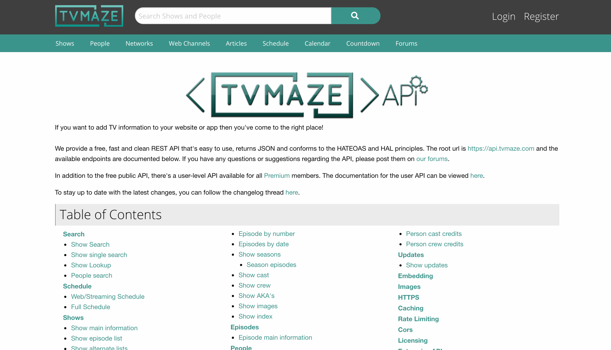
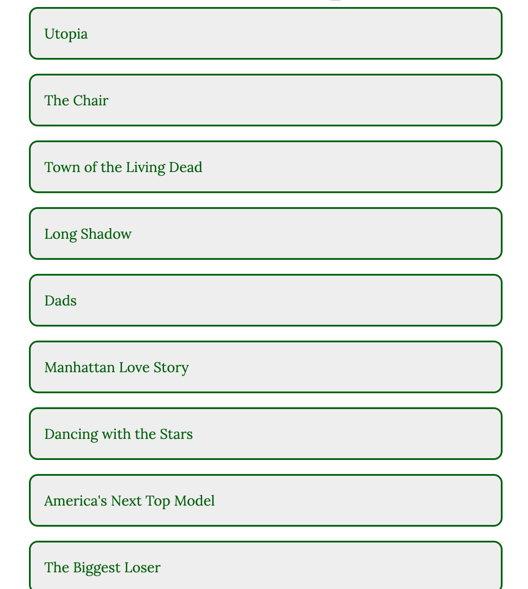
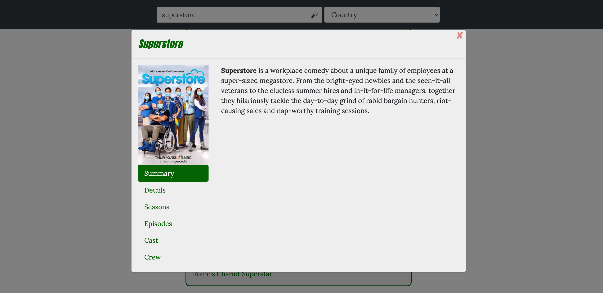

Case Study for TV Show Explorer

Introduction
Overview
TV Show Explorer is a static web app built with HTML, CSS, and JavaScript that lets users search for TV shows, sort TV shows by categories, such as language, and view details about TV shows, like the episodes and cast.
Purpose and Context
TV Show Explorer is a personal project I created as a part of my Full Stack Immersion course on CareerFoundry to showcase my JavaScript skills and ability to incorporate APIs.
Objective
The goal of this project was to build a small web application with HTML, CSS, and JavaScript that loads data from an external API.
Project Details
- My Role: Lead Developer
- Tutor: Gurpreet Kooner
- Duration: 1 month
Project Skills
- HTML
- CSS
- Bootstrap
- JavaScript
- jQuery
Approach
Overview
The aim of the app was to view a list of data and see more details about a data item triggered by a user action (e.g. a click), and these are the main features of the project that drove my process in developing it.
-
Load data from an external API
The API I chose for this project is TVMAZE API and, as its name suggests, contains data related to TV shows, such as the cast and crew. I decided to use this API, because it is fast and is very user-friendly in that it returns data in an easy-to-use format (JSON), does not require setting up an API key allowing for immediate use, and has clear documentation and examples.
To load data from this API, I used the jQuery Ajax function and saved the list of shows as an array to later loop through to show each item in the list. The reason I used the jQuery Ajax function as opposed to plain JavaScript, like the fetch function or the XMLHttpRequest object, is because the jQuery function requires less lines of code, is easier to use, and does not require additional code for it to work in older browsers.
 -
Show list of items
To show the list of shows, I created a forEach loop to go through the list of shows and display each show. These shows can be sorted by factors, like country and rating, which is done by sorting the array containing the list of shows with the sort function. They can also be searched by name, which is done by making a request to the API with the search term using the jQuery Ajax function and then saving that list of shows in another array separate from the main array created when the app is first loaded; this is done so that when a user clears their search, they can see the same list of shows they were viewing before searching.
One of the issues I noticed at this point was that searching for a TV show was creating a lot of unnecessary API requests, since each time a user typed a character, an API request was being made. After bringing this issue up to my tutor, he suggested the use of a debounce function, which essentially creates a timer so that a function is only run after a certain period (after the user is done typing in this case). Once I looked to see how it works, I implemented it in my app and was able to solve this problem and provide a better user experience.
Another factor I had to consider was the fact that the results of each request had a limit of 250, so I had to decide whether to make multiple requests upon loading the page to get all the results at one time or let the user get more results by scrolling or clicking a button. I decided to have the user make the request by clicking on the “Load More Shows” button to, again, avoid unnecessary API requests.
 -
View details for each item by user action
To show the details of each show, I implemented a modal using Bootstrap that appears when the user clicks on a show. The reason I decided to use Bootstrap is because in addition to providing an out of the box solution to create mobile responsiveness and a clean UI, it also has several user functionalities, among them the modal, that allow for quick implementation and fewer lines of code.
One of the challenges I faced while working on this section was that the content added to the modal would not be hard coded but dynamic depending on what show the user clicks on, so I had to decide whether to create a new modal each time or hard code the modal and simply edit the content inside the modal dynamically. I decided to do the latter, because this way I would not be creating unnecessary elements, since the modal doesn’t change, only the content inside it; also, hard coding the modal makes it easier to edit with jQuery because the modal will already exist within the page. The only downside I found with this, however, is having to make sure to reset the modal (i.e., clearing the content, making the first tab the active one) each time.
Another aspect of this part of the process was to, once again, avoid unnecessary API requests when clicking on the tabs for more information about the show. Therefore, I made sure to use the debounce function so that the request would only run once per click and to only send a request if one hadn’t already been made to get the requested content.
Reflection
With TV Show Explorer, I built an app that loads data related to TV shows from TVMAZE API , displays it in the form of a list as well as a modal, allows users to sort it by various factors, and search it by name. I was able to do this using JavaScript and jQuery to make API requests, loop through data, sort data, and show details about each TV show, and Bootstrap to style the app and show a modal with the show’s information.
This was my first time using an object-oriented approach to structure my code, so it took me a little while to get used to this programming paradigm, but in addition to making sure my code doesn’t conflict with any external code, I believe it kept my code more organized.
This was also my first time using a linter (ESLint and Stylelint), and I really appreciated how this allowed me to find errors immediately that I may have otherwise overlooked initially.
Some of the improvements I would like to make in a second iteration of this app are mainly related to improving the user experience: adding filter functionality to filter the shows based on the sorting factors and changing the width/height of the content in the carousels displaying information about the TV shows for a smoother transition between slides. Overall, this was a fun project for me that I feel greatly improved my JavaScript knowledge and skills.